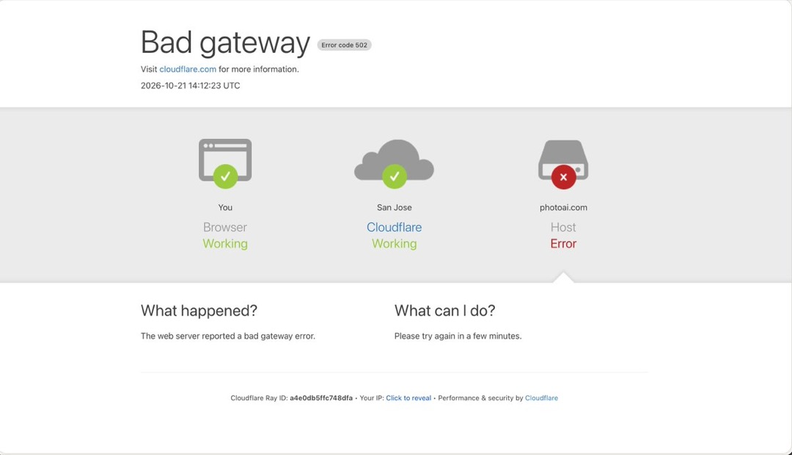
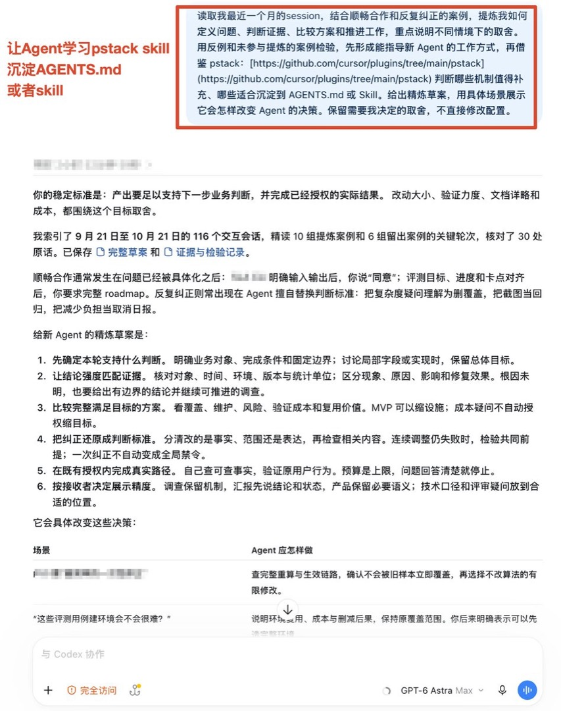

本期速览
01 levelsio因PHP漏洞全站下线
02 Opus5.5提示词与三Loop开发法
05 Agent Loop三重防护稳住生产
06 Anthropic实战Agent矩阵架构
01｜levelsio因PHP漏洞全站下线
来源（X） · @yanhua1010 · 2026-10-21 22:13
我挨个点了他主页那几个站，全是 502，到现在还没恢复。
这几个站一个月加起来大约 16.5 万美金，PhotoAI 一个就 8.6 万，平均每天 5000 多美金的流水，他说关就关了。
原因是 PHP 两个满分 10 分的远程代码执行漏洞提前泄露，问一句 AI 就能找到攻击的起点。
Cloudflare 上的 WAF 只能先挡一下，攻击者知道服务器真实 IP 就能绕过去，真正能解决的只有打补丁。
还是那句话：PHP 是世界上最好的语言！

02｜Opus5.5提示词与三Loop开发法
来源（X） · @huangtongxueh · 2026-10-21 22:14
1. Opus5.5 + @felixrieseberg 的提示词来让AI重新审视任务应该如何被专业地完成
- 可以用在复杂任务的规划阶段，而不是每次聊天都使用
- 比如你准备做一个技术项目、开展一项调研时，可以先提交原始需求，再加入这段 Prompt：
I want a deeper version of this task, not a bigger one. Before rewriting it: (1) say what a top professional in this field would do here that I'm not asking for; (2) name the rawest material they would start from instead of what has already been digested for me; (3) name the specific methods and tools they would use; (4) say what, other than you or me, would show the result is right. Then rewrite my prompt to ask for exactly that.
- 我最近在调研把code mode作为特性加入到我的agent，也用了这个meta prompt，效果非常不错，opus5.5本来就是一个强大的模型，有了这种meta prompt之后能发挥它更强大的作用
2. @yetone 开发 magpie的 loop
- yetone用三个 loop 就完成了magpie 这个产品的开发工作，我自己也去实践了一下，落地到实际的开发中，可以概括为需求 loop、反馈 loop、清理+沉淀经验的 loop，有几点需要注意
- yetone 能放手让 loop 跑，是因为社区每天都在帮他补需求，还顺手当了验收方。比如X 上直接@或者 discord 里的消息，都会被它捕获需求的 loop 拿到。
- 如果是个人项目 / 公司内部开发，需求来自自己想 / pm给，没有这股外力，需要自己造一个等价物：把方向写成一个文件，让 loop 从这里拿活儿。人只管方向和验收，loop 负责执行。这个方法论跟几个月前的 loop engineering 没什么区别，但现在模型能力增强（opus5.5真的挺好用的） + yetone践行 build in public，才让整件事情 1+1 大于 2，我觉得这也会是未来个人开发者的一个趋势，靠 agent 收集/分析需求做软件迭代，开发者只需要定义目标+铲屎即可。
- 在内部平台的开发，我是这样用这三个 loop 的：
① 需求 loop：我接入了 prd、工单、和我开发机器上的 adr，这里需要做一些简单的说明，告诉 claude 具体的位置，如果内部有 mcp/cli 之类的就直接接入
② 反馈 loop：反馈来源目前我接入了 bug 单、用户群、埋点数据，同样先用便宜模型筛一遍，生成候选需求。候选需求我不会直接进我开发机器上的 adr，会先发到我 im 的 bot 上，点头后才进需求文件。
③ 清理 + 沉淀经验的 loop：目前我是让 claude 定期结合我 pr 上的 diff 对照需求文件去做对抗性审查，看看有没有做偏，如果同一个坑踩了第二次，就改成 lint 或测试，从结构上让 agent 不会再犯。
- 我在这个试验里面只负责两件事情：改核心模块之前，loop 必须先停下来等确认；每晚花点时间过一遍 loop 的产出。如果想尝试的话，可以建议先从需求 loop 跑起来。
3. @poteto 的 pstack skill
- pstack 是 poteto 公开的一套 Agent 写代码工作流，官方以 Cursor 和 Grok Bot 插件的形式发布（社区也有 Claude Code/Codex 的移植版），目标是写出高质量的代码，里面除了她自己的一些工作流，还加上了一些好用的 meta prompt，比如 sharpen 这个 skill，思路就跟前面 felixrieseberg 的提示词一样。
- 我很喜欢它是因为里面是资深工程师反复做的判断沉淀下来的Agent 在关键节点必须执行的流程，所以你可以直接让你的 claude /codex用以下这个 prompt借鉴pstack，优化你日常的工作流：
“读取我最近一个月的session，结合顺畅合作和反复纠正的案例，提炼我如何定义问题、判断证据、比较方案和推进工作，重点说明不同情境下的取舍。用反例和未参与提炼的案例检验，先形成能指导新 Agent 的工作方式，再借鉴 pstack判断哪些机制值得补充、哪些适合沉淀到 AGENTS.md 或 Skill。给出精炼草案，用具体场景展示它会怎样改变 Agent 的决策。保留需要我决定的取舍，不直接修改配置。”
- 不过用的时候要小心，简单的任务完全没必要用 poteto mode，复杂的任务用即可，因为 poteto mode 的并行模式会带来大量子 agent 调用，消耗你的 token

03｜RSI研究重走深度学习老路
来源（X） · @qingke_ai · 2026-10-21 11:16
过去一段时间，RSI（Recursive Self-Improvement）正在从一个遥远的设想变成现实。市面上出现了一大批可以动手实验的论文和方法。这些论文有的修改自己的 Skill，有的整理自己的记忆，有的改自己的 Harness，还有的生成训练数据来微调模型的权重。
如果你做过深度学习，读这些论文时大概会有一种强烈的既视感。它们遇到的问题，很多是以往深度学习就遇到过的。而它们给出的解法，也常常能在深度学习里找到原型。
一些方法更是从方法命名上就体现了对深度学习的借鉴，SkillAdam 借鉴 Adam 原理更新 Skill，TextGrad 把反向传播搬到了文本上，RRSI 则把正则化用到了 Agent Harness 的修改过程中。
如果总览深度学习和RSI的整体流程，我们会发现它们有某种相通之处。深度学习是根据学习信号算一个Loss，根据Loss调整神经网络的参数。而RSI则是在Agent执行完任务后，根据任务结果及外部反馈，让Agent修改自己的Skill、Harness。
本文将从四个角度讨论现有RSI对深度学习的借鉴：
1、每一轮该怎么改？ 改什么、改多少，失败该归因到哪个组件。对应优化器和反向传播。
2、学习信号从哪里来？ 没有现成的标签时，Agent 如何从奖励、学习效果、自身的训练轨迹、对手和同伴那里获得信号。对应强化学习、元学习、蒸馏、对抗学习和集成学习。
3、怎么不学偏？ 如何避免 Skill 只适用于见过的任务，也就是开头的第一个问题。对应正则化和数据增强。
4、怎么长期改下去？ 如何在持续更新中，既不丢掉旧能力，也不越改越臃肿，也就是开头的后两个问题。对应持续学习和剪枝。
在最后，我们还将探索性地讨论顺着这条路还能挖出哪些新方向。
https://qingkeai.online/blog/awesome-rsi?utm_source=twitter
04｜AI团队内部推行内容去AI化
来源（X） · @StephanieLEE_30 · 2026-10-21 20:09
所有要给团队成员阅读的非调研类内容，都不可以用ai
调研类内容也要人工review过才可以分享给大家看
究其原因是ai的事无巨细和不说人话极大地影响了信息传递效率
小团队内需要的是简洁 准确 高效传递信息，而非完成一个漂亮的文档
手写的过程也避免了思维惰性，能够再梳理思路
实践下来效果非常好👍推荐小团队founder尝试
05｜Agent Loop三重防护稳住生产
来源（X） · @Jerry_fsy · 2026-10-21 17:52
在Sitor上跟着“Super Agent实战课”完成了前两章的学习（Agent Loop + Tool System）。在这里做一下总结，希望能帮刚入门 Agent 的朋友少踩一些坑。
具体如何从0搭建一个Agent在这个系列中因为已经有Sitor上的“Super Agent实战课”的付费课程和Datawhale的hello-agents这样的开源学习资料，所以不会详细阐述，这个系列主要讲解在这个过程中需要注意的一些点。
第一，在使用模型API前先做一个Mock Model。
从0搭建一个Mock Model可以帮助我们更好的理解LanguageModelV3 接口，知道generateText 和 streamText是如何实现的以及它们之间的区别。
当然，既然是Mock Model，模型的回复就做的简单一些。
第二，在Agent Loop中需要加层层保护。
Agent Loop 的核心是：模型思考，调工具，拿结果，再思考。
但是如果不做好层层保护的话，在生产端的Agent Loop很难稳定运行。尤其是下面三种防护要格外注意：
1.循环检测：我们不希望模型在不断做事，但没有任何进展，尤其是下面两种情况：
（1）通用重复：同一个工具，同样的参数，同样的返回结果，然后反复调用；
（2）乒乓循环：两个操作来回交替，A→B→A→B，看起来是在“做事”，但实际毫无进展。
2.API容错：针对不同的API错误，采取不同的应对策略，而不是使用统一try-catch方案。关键是对API的报错做一个分类，对不同的类别采取对应的措施。
3.Token预算：我们不希望随着Agent的狂奔，消耗的金额不受控制。因此，设定一个token的预算对于控制整体成本是一道保险。
第三，模型和Agent Loop对于工具的关注角度是不同的。
模型关注的是怎么调用这些工具，想知道name, description, parameters等参数；
但是Agent Loop还需要知道工具A和其他工具能否并行执行，这些工具会不会改状态，结果会不会过长等等。这些模型不会关注，但是关乎到整个Agent的执行稳定性和效率，因此需要格外注意。
第四，理解如果不做工具的延迟加载，为什么工具越多，模型检索到正确的工具的概率可能会下降。
06｜Anthropic实战Agent矩阵架构
来源（X） · @huxlab · 2026-10-21 13:28
大部分人还在把 Claude 当高级对话框调参，顶级团队早就在用工业级标准搭真正能跑生产的 Agent 矩阵了。
这 60 分钟释放的架构干货，比市面上卖 500 刀的所谓割韭菜课不知道要好了多少倍。
如果你只是写个 Demo 自娱自乐，大可随便折腾；
但凡想跑通生产级业务，这套"脑手"分离架构务必要学会：
1. 把环境当牲口，别当宠物养：Session 蜕变成纯 Append-only 事件日志，Harness 随时替，Sandbox/MCP 随用随扔。挂了直接从最后一条日志秒级拉起，TTFT 暴跌 90%。
2. 零信任安全封死后门：凭证永远不进沙箱，全走代理注入。模型连 Token 的面都见不着，Prompt Injection 彻底没戏。
3. Outcomes 自监督闭环：独立 Verifier 子 Agent 拿着评分细则（Rubric）在旁边盯产出，杜绝瞎蒙与幻觉。
4. 跨 Session 进化（Dreaming 机制）：打破“每次对话都是失忆症”的宿命。后台自主复盘几十个 Session 记录，去重、提炼、补洞，让 Agent 真正跨任务持续变强。
真正决定系统上限的，从来不是让模型多敲几行代码，
而是你的接口与记忆设计能否扛得住下一代模型的冲击。